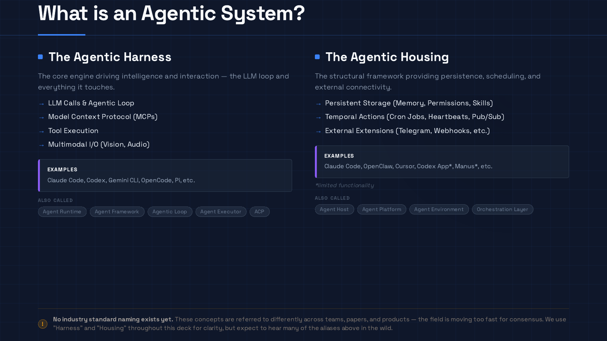
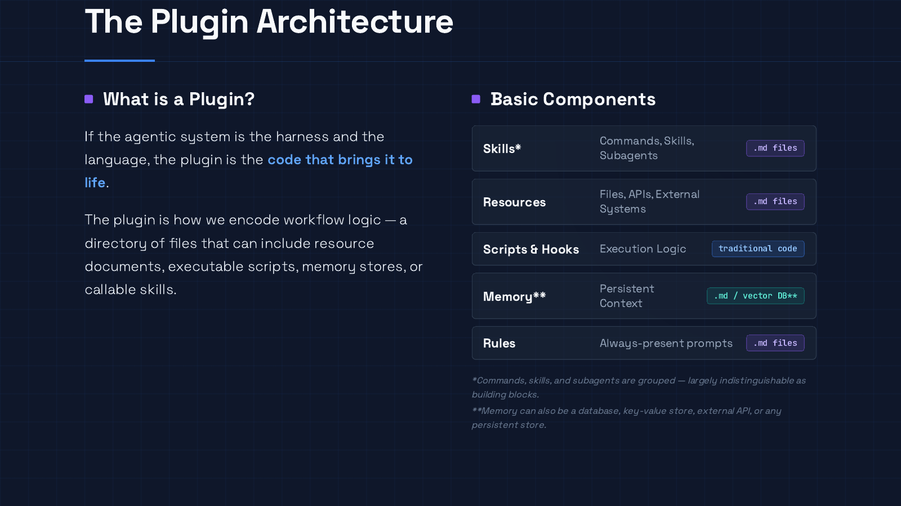
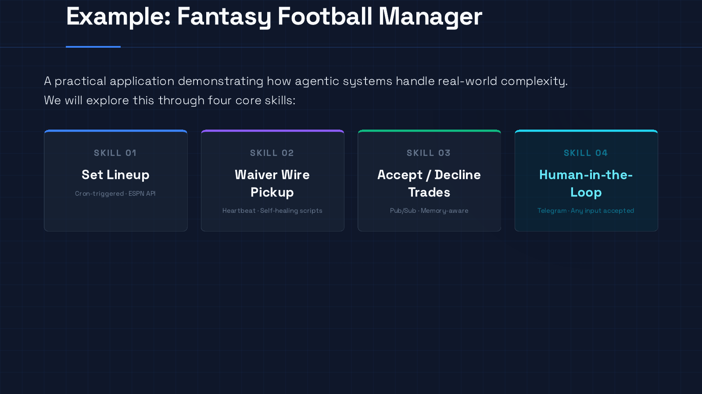

Agentic systems are not just models with tool access. The useful system is the model loop plus the housing around it: state, triggers, permissions, plugins, observability, and human escalation. This guide moves from that core distinction, to the plugin layer where workflows become repeatable, to a fantasy-football example that shows cron, heartbeat, pub/sub, and human-in-the-loop triggers in practice, then lands on a checklist for building systems that are durable, observable, and bounded.
The model is not the whole system.
That sounds obvious until you watch how most agent projects are described. The conversation usually starts with the model: which one, how many tokens, what benchmark score, what context window, what tool-calling API. Those things matter. They are not what makes an agentic system useful in production.
The useful system is the model plus the operating environment around it: the tools it can touch, the memory it can carry forward, the schedules and event streams that wake it up, the permissions that keep it bounded, the traces that make it inspectable, and the human review paths that stop it from confidently doing the wrong thing.
I think about this as two layers:
- Agentic harness: the reasoning and tool-use loop. This is where model calls, tool execution, MCP servers, multimodal input, planning, and action happen.
- Agentic housing: the environment around the loop. This is where persistence, scheduling, permissions, skills, memory, external integrations, and operator workflows live.
Those are my labels, not an industry standard. The field has not settled the vocabulary. Depending on the product or team, you will hear runtime, framework, executor, platform, host, environment, orchestration layer, or agentic loop used for overlapping ideas. The names matter less than the distinction.
If you are building on agentic systems, you are not just choosing a model. You are designing the housing around the harness.

The harness is the engine
The harness is the part most people recognize as “the agent.” It is the loop that takes context, calls a model, reasons about the next action, invokes a tool, observes the result, and keeps going until the task is done or blocked.
A harness may include LLM calls, tool execution, MCP servers, multimodal I/O, planning, retries, and handoffs. Claude Code, Codex-style environments, Gemini CLI, OpenCode, and similar tools all expose versions of this layer. They differ in details, but the core idea is recognizable: a model-driven loop can inspect context, select actions, call tools, and adapt.
This is a real shift from traditional software. In deterministic software, the developer encodes most of the decision path. In an agentic harness, the developer gives the system a goal, constraints, tools, and context, then lets the model decide some of the path at runtime.
That flexibility is powerful, and it is where trouble starts. A harness can reason through messy inputs, recover from small surprises, and choose from tools dynamically. It can also take a strange path, overfit to irrelevant context, call a tool at the wrong time, or produce a plausible answer that is not actually correct. The harness is the engine. It is not the brakes, the garage, the maintenance log, or the insurance policy.
That is why housing matters.
The housing is the environment that makes the engine useful
Agentic housing is the structural environment that gives the harness somewhere durable and safe to operate.
It includes persistent state, memory, permissions, credentials, schedules, queues, pub/sub events, webhooks, skills, plugins, external integrations, review artifacts, traces, dashboards, and human escalation paths.
This is the part that turns a clever single-session agent into an inspectable system.
A chat window can produce a good answer. A housing layer lets the next run know what happened last time. It lets the operator see current state, wake the system on a schedule, respond to an event, ask for help, preserve artifacts, and stop before something expensive or destructive happens.
This is the lesson from the OpenClaw content-generation pipeline I have been building. The hard part is not getting a model to draft one article. The hard part is the operating system around the model: durable packet workspaces, review history, specialist routing, scheduled operator passes, human review, and carryover from one iteration to the next.
The same lesson applies outside content generation. If the agent is supposed to run more than once, affect external systems, or improve over time, the housing is not optional infrastructure. It is the product.
The plugin layer is where capability becomes behavior
A model with tools is still generic. The plugin layer is where generic capability becomes a repeatable workflow.
A plugin, skill, command, rule, or workflow package is not just a prompt. It is a bundle of behavior: instructions, activation metadata, resources, examples, scripts, hooks, memory, permission boundaries, output contracts, and quality gates.
Anthropic’s Agent Skills framing is a useful example: skills are folders of instructions, scripts, and resources that agents can discover and load when relevant. The Model Context Protocol is another important piece of the ecosystem: it gives AI applications a standard way to connect to external tools, data sources, and workflows.
But MCP is not the whole architecture. MCP can expose a tool; the housing still decides when the agent sees it, what permissions it has, what context it receives, and what gets logged afterward.
This is where portability gets tricky. A workflow can look portable because the instructions are Markdown, but still fail when moved to another host. A research skill that calls web_search, writes to a local packet directory, and assumes memory retrieval may not port cleanly into a host where the search tool has a different name, file writes require an approval gate, activation is metadata-driven, and memory is unavailable or scoped per session. The procedure survived. The runtime semantics changed.
A SKILL.md can carry the core procedure. It does not automatically carry the host adapter.
If you are building reusable agent workflows, separate the reusable core from the host adapter:
- What is the procedure?
- When should it activate?
- What tools and resources does it need?
- What policy envelope is safe?
- What artifacts should it produce?
- What should be tested before rollout?
That order keeps you from mistaking the packaging format for the architecture.

A running example: the fantasy football manager
A useful way to understand agentic architecture is to stop drawing one giant “agent” box and instead decompose the system into skills, triggers, memory, tools, and review paths.
Take a fantasy football manager. It sounds playful, but it has real system shape: external APIs, changing information, scheduled work, event-driven decisions, ambiguous human preferences, and actions that mutate state. You could build it as four skills.

1. Set lineup: cron plus validation hooks
Every week, the system needs to set the best lineup. That is a fixed schedule, so a cron job is the right trigger.
The skill might fetch roster data, pull projections, choose starters, update the lineup through an API, and then validate that every required position is filled. The point is that the agent is not just “thinking about fantasy football.” It is operating inside a bounded workflow:
- wake up at a known time
- fetch known inputs
- run a known optimization task
- perform a controlled external write
- validate the final state
- leave an artifact or trace
Cron is good when the task should happen at a predictable interval. The risk is silent failure or stale assumptions. That is why the validation hook matters. A scheduled agent without post-run validation is just a confident alarm clock.
2. Waiver wire pickup: heartbeat plus controlled self-healing
Waiver wires are different. The system needs to monitor changing opportunities. A heartbeat or polling loop is a better fit: wake up periodically, scan the environment, decide whether anything is worth doing, and stop if not.
This is where self-healing becomes tempting. If an ESPN data fetch fails, an agent might inspect the error, patch a helper script, or pivot to web search. That can be useful. It can also be dangerous.
Self-healing should mean controlled recovery, not autonomous license. A safe version has scoped file permissions, a clear allowed-tool list, rollback behavior, validation checks, and an escalation threshold. The agent can fix a scraper in a fixture workspace. It should not freely rewrite production logic, mutate external records, and declare victory because the stack trace disappeared.
The useful framing is: self-healing is a recovery loop with guardrails.
3. Accept or decline trades: pub/sub plus memory
A trade offer should not wait for the next polling interval. It is an event. The right trigger is pub/sub, a webhook, or another event-driven wakeup.
When a trade arrives, the agent can evaluate the players, check recent news, recall standing preferences, and decide whether to accept, decline, or ask for help.
Memory matters here. Without memory, the system only sees the current event. With memory, it can incorporate previous trades, manager preferences, earlier news, or standing rules about risk tolerance.
But memory needs policy. What is stored? How long does it live? Can it be wrong? Is it cited back to the decision? Can a human inspect and correct it? Memory that cannot be audited becomes lore. Lore is not a system of record.
4. Human-in-the-loop: webhook plus arbitrary input
Eventually the agent will hit ambiguity. Maybe the data conflicts. Maybe the trade is close. Maybe the decision has social context the agent should not infer. That is when it should ask a human.
A human-in-the-loop interface might send a Telegram, Slack, Discord, or SMS message with the relevant context, the question, and the options. The human might respond with text, a URL, a screenshot, or a voice note. The agent parses the input, updates context, executes the directive, and stores the useful learning for next time.
This is one of the best reasons to build agentically: the system can accept messy human input without forcing every interaction through a rigid form.
It is also an input channel that needs security boundaries. A human reply is not automatically safe just because it came through a messaging app. The system still needs to know who has authority, what instruction scope applies, whether the message contains prompt injection, and what actions require confirmation.
Trigger patterns are architecture decisions
The fantasy football example generalizes into a simple trigger model:
| Pattern | Use when | Example | Main risk |
|---|---|---|---|
| Cron | A task should happen on a fixed schedule | Weekly lineup optimization | Silent failure; stale assumptions |
| Heartbeat / polling | The system should monitor for changing opportunities | Waiver wire scans | Cost, noise, unnecessary actions |
| Pub/sub | A specific external event should wake the agent immediately | Incoming trade offer | Bad event schema; missing context |
| Webhook / human loop | A human or external system should inject new context | Telegram reply with URL/audio/image/text | Ambiguous authority; prompt injection |
Set Lineup
Run on a fixed schedule, then validate final state.
Risk: silent failureWaiver Scan
Wake periodically, check for opportunity, stop cheaply when nothing changed.
Risk: cost and noiseTrade Offer
Respond to an incoming event with memory-aware evaluation.
Risk: missing contextAsk for Help
Escalate ambiguity with context, options, and authority boundaries.
Risk: prompt injectionCron, heartbeat, pub/sub, and human-in-the-loop workflows create different cost profiles, failure modes, and review requirements.
Choosing the trigger is not an implementation detail. It changes the cost profile, failure mode, review model, and observability requirements.
A cron job needs validation and alerting. A heartbeat needs a cheap “nothing to do” path. Pub/sub needs event schemas and idempotency. A human loop needs context, authority boundaries, and artifact retention.
If you cannot describe how the agent wakes up, what state it reads, what it is allowed to mutate, and how you know what happened, you do not have an architecture yet. You have a demo.
When agentic systems are worth it
Agentic systems are best when flexibility is the point.
They make sense when inputs are messy, multimodal, or variable. They make sense when the task requires judgment, decomposition, adaptation, or natural-language interaction. They make sense when the workflow benefits from carryover: prior attempts, review notes, preferences, state, traces, and artifacts that make the next run smarter.
Good candidates have a few traits:
- clear goal, variable path
- messy or multimodal input
- tool choice at runtime
- recoverable surprises
- tolerable nondeterminism
- review before release
- visible success signals through artifacts, traces, or evals
That last point is important. Agentic systems are easier to trust when the signal function is visible.
In the content-generation pipeline, the signal is not “did the model write words?” It is whether future drafts need fewer review rounds, preserve more style feedback, and reach publishable quality with less setup. That is measurable because the housing preserves packet state, review artifacts, status changes, and human feedback.
The lesson is broader: do not build an agentic system because agents are fashionable. Build one when the task benefits from adaptive reasoning and you can design the surrounding state, review, and measurement loops.
When not to build agentically
Agentic systems are powerful, but they are not free.
They are often the wrong tool when the task is stable, exact, low-latency, cheap, and already well-specified. If deterministic code can solve the problem safely and clearly, use deterministic code. There is no prize for adding nondeterminism to a workflow that does not need it.
The main costs are predictable:
- Token cost: Multi-step runs get expensive with retries, memory lookups, tool outputs, and long traces. Refresh exact model pricing close to deployment or publication.
- Latency: LLM inference and tool loops are slow compared with normal code. Seconds or minutes may be fine for research or operations, not for a low-latency product path.
- Nondeterminism: The same input may not produce the same path or output, which makes testing, certification, and regulated audit harder.
- Security and privacy: Prompts, tool outputs, files, and retrieved context may leave your environment unless you design around that. Skills and plugins can also introduce unsafe instructions or code.
- Data mutation risk: Agents can write files, call APIs, submit forms, merge code, or update records. If those actions are not scoped and reversible, self-healing can become self-damage.
- Vendor dependency: Model behavior, APIs, pricing, and tool integrations change. An update can silently alter a workflow that used to pass.
- Observability: Traditional logs do not fully explain an agent path. You need traces of model calls, tool calls, handoffs, guardrails, external writes, and escalations.
The blunt rule: use agentic systems where flexibility beats strict predictability. Avoid them where strict predictability is the main requirement.
Minimum viable architecture for an agentic system
This is the practical core. Before I would trust an agentic workflow beyond a demo, I would want at least this checklist.
1. A state model
Where does the agent read and write durable state? It could be a packet workspace, database, ticket, queue, object store, memory file, or vector index. The exact storage matters less than inspectability: what does the system believe, what happened last time, and what should happen next?
2. A trigger model
How does the agent wake up? Cron, heartbeat, pub/sub, webhook, manual invocation, and human reply all imply different failure modes. Pick deliberately. Do not hide every workflow behind “the agent will notice.”
3. A tool boundary
Which tools can it call, and under what conditions? MCP is useful for exposing tools and resources in a standard way. It does not replace permission design. The housing still decides authentication, scopes, approval points, sandboxing, and context exposure.
4. A mutation policy
What is the agent allowed to change? Separate read-only exploration from reversible writes from irreversible actions. Require confirmation for expensive, destructive, external, or privacy-sensitive actions. If the agent can modify code or data, design rollback and validation before celebrating self-healing.
5. A memory policy
What should carry forward? Memory should preserve useful context, not accumulate every token forever. Decide what gets stored, how it is retrieved, how it is corrected, and how it is cited back into decisions.
6. Skill and workflow tests
How do you know the reusable behavior works? Test the package surfaces you control: metadata, activation, referenced files, helper scripts, permissions, output contracts, and routing behavior. For important workflows, add fixture runs, trace review, regression checks, and security review.
7. Observability
Can you reconstruct what happened? Capture traces of model calls, tool calls, guardrails, handoffs, external writes, and human escalations. Agent behavior needs more than ordinary application logs. At minimum, preserve artifacts and decision trails.
8. Human escalation
When should the agent ask for help? Low confidence, conflicting data, high-impact mutations, policy ambiguity, and user-facing publication should all have escalation paths. A good human loop includes context, options, authority boundaries, and a decision record.
9. Carryover
How does the next run get smarter? If review notes, failed attempts, rejected directions, and successful patterns disappear into chat scrollback, the system is not learning operationally. Preserve the artifacts that matter.
Design the housing as carefully as the prompt
It is easy to make agentic systems sound magical. Give the model a goal, add tools, and let it figure things out.
That is not wrong. It is just incomplete.
Some work really does benefit from flexible inputs, abstract goals, adaptive planning, memory, and recovery. These systems fail when teams treat the model loop as the whole product.
The harness matters. Better models and better tool loops will keep improving what agents can do.
But the housing determines whether the system is useful, safe, and repeatable. It decides how the agent wakes up, what it can touch, what it remembers, how it recovers, when it asks for help, what gets logged, and how the next run improves.
If you are building on agentic systems, do not start with “what can the model do?”
Start with the checklist:
- What state should exist before and after the run?
- What event should wake the agent up?
- What tools should be available, and under what permissions?
- What artifacts should prove what happened?
- What should be deterministic?
- What should be agentic?
- What should require a human?
That is the practical architecture question.
The model is the engine. The housing is what makes the engine worth trusting.